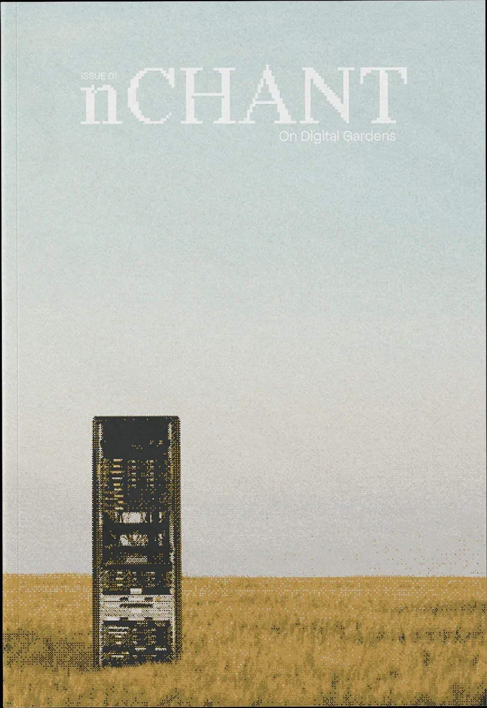
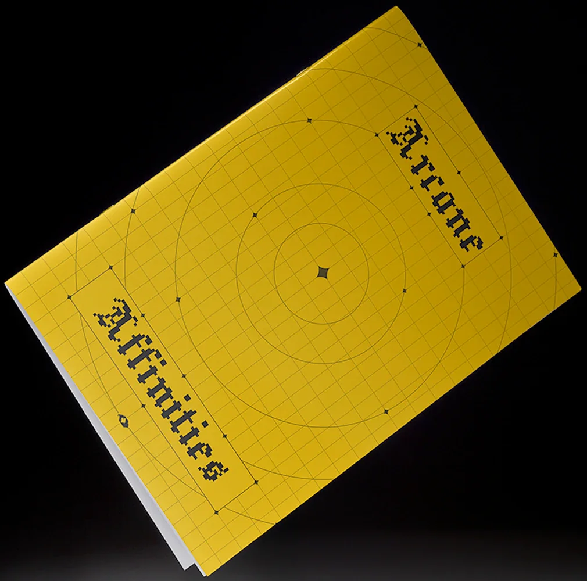

Publishing
-

Magazine
nCHANT #01 — On Digital Gardens
nCHANT is REINCANTAMENTO’s new monographic magazine — an oblique optical device for exploring unusual ideas, a polyphonic, anti-disciplinary chorus of voices examining concepts at the membrane between culture and technology.
-

Catalogue
Arcane Affinities — Esoteric Algorithms & Re-Enchanted Technologies
Arcane Affinities brings together two international exhibitions, gathering artworks and essays that explore how esoteric practices can reactivate agency and technological imagination.